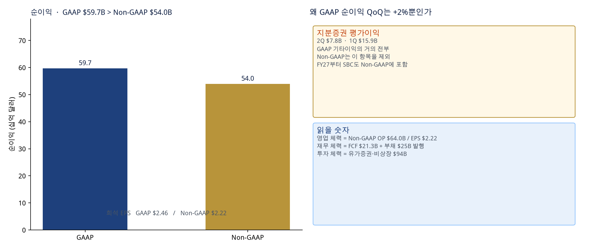
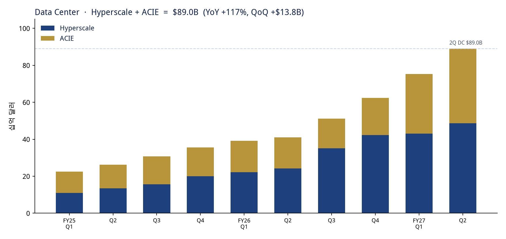
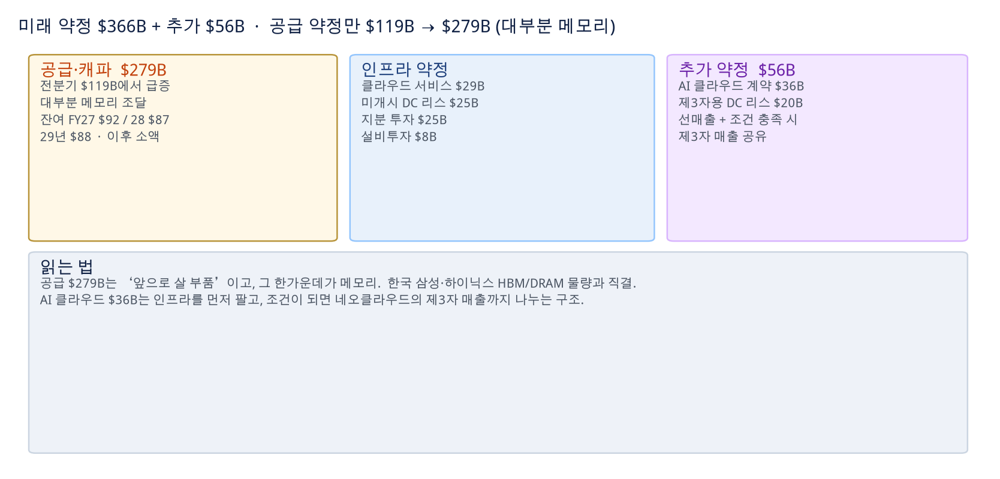
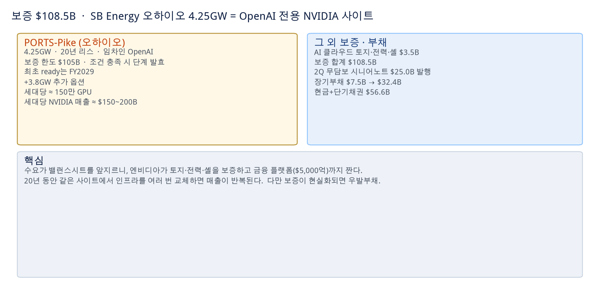
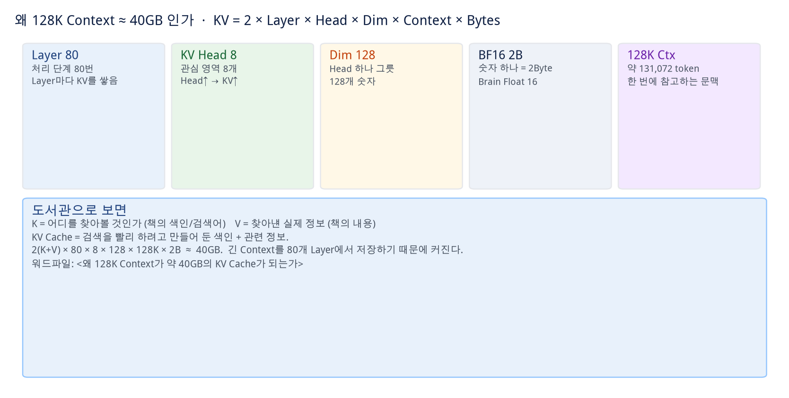
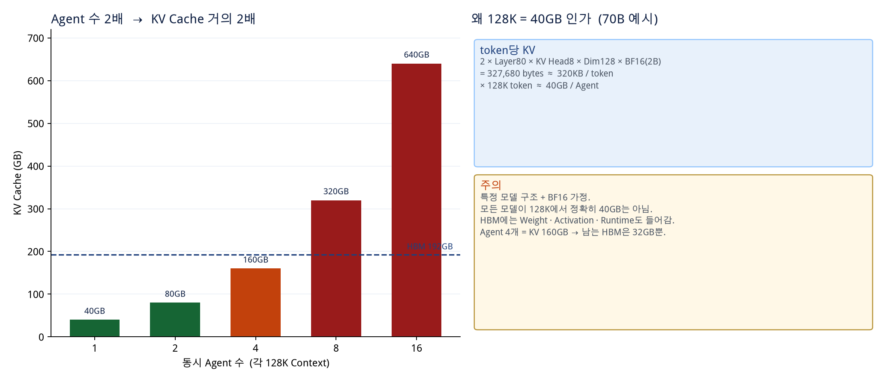
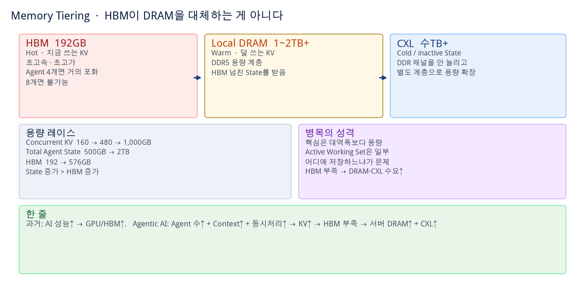
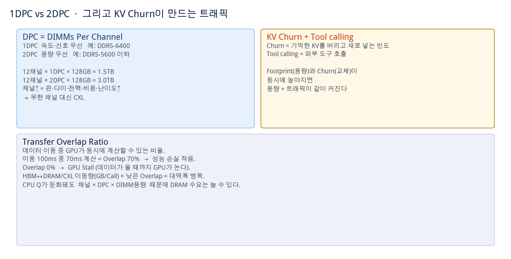

공식 IR 심층 — 보도자료 · CFO · IR 덱
출처: NVIDIA FY27 2Q 보도자료 · Colette Kress CFO Commentary · Investor Presentation (2026. 8. 26). Quick 코멘트 섹션을 대체하지 않고, 공식 표가 보강한 부분만 한글로 푼다. FY28 +70%는 콜/코멘트 메시지이며 공식 가이던스 표에는 3Q만 있다.
공식 IR이 바꾼 읽기
실적 비트와 3Q $108B는 이미 나왔다. IR이 새로 확정한 것은 네 가지다.
① GAAP 순이익이 Non-GAAP보다 크다(지분증권 $7.8B).
② 공급약정이 한 분기 만에 $119B→$279B, 대부분이 메모리.
③ 토지·전력·셸 보증 $108.5B, 그중 $105B는 오하이오 PORTS-Pike·OpenAI 20년.
④ 자산 $207B→$320B, 장기부채 $7.5B→$32.4B. 엔비디아는 칩 회사가 아니라 AI 공장의 주간사·보증인·투자자로 장부가 커지고 있다.
1. 왜 이번엔 Non-GAAP가 더 작은가

GAAP EPS $2.46 · Non-GAAP $2.22. 지분증권 평가이익을 빼면 Non-GAAP가 작아진다. 1Q 평가이익이 $15.9B라 GAAP 순이익 QoQ는 +2%에 그친다.
| 구분 | GAAP 2Q | Non-GAAP 2Q | QoQ / YoY | 읽는 법 |
|---|
| 매출 | $96,221M | $96,221M | +18% / +106% | IR 덱: 분기 증분 약 $15B, YoY 가속 4분기 연속 |
| 매출총이익률 | 75.0% | 75.0% | +0.1%p / +2.6%p | Blackwell Ultra 믹스. QoQ는 사실상 보합 |
| 영업비용 | $8,408M | $8,232M | +10% / +55% | 컴퓨트 인프라 + 보상. 3Q 가이던스 $9.2B / $9.0B |
| 영업이익 | $63,734M | $63,956M | +19% / +124% | 영업은 GAAP≈Non-GAAP. 차이는 아래에서 |
| 기타이익, 순 | $7,773M | $300M | — | GAAP의 $7,771M이 지분증권 평가이익 |
| 순이익 | $59,688M | $53,954M | GAAP +2% / +126%
Non-GAAP +18% / +118% | 1Q 평가이익 $15.9B → 2Q $7.8B. 영업과 분리해서 볼 것 |
| 희석 EPS | $2.46 | $2.22 | GAAP +3% / +128%
Non-GAAP +19% / +120% | 컨센 $2.09와 비교하는 숫자는 Non-GAAP $2.22 |
| 유효세율 | 16.5% | 16.0% | FY27 가이던스 16–18% | 매출 증가가 세율 상승의 주원인으로 설명 |
회계 변경 — SBC
FY27 1Q부터 Non-GAAP는 주식보상비용(SBC)을 더 이상 빼지 않는다. 과거 Non-GAAP도 SBC를 포함하도록 재작성됐다. 2Q SBC는 $2.03B. “Non-GAAP가 더 깨끗하다”는 옛 습관으로 읽으면 안 된다.
반기 · 보고 세그먼트
상반기 매출 $177.8B, GAAP 순이익 $118.0B. Compute & Networking $88.30B, Graphics $7.92B. 플랫폼 표(DC/Edge)와 보고 세그먼트는 축이 다르다.
2. Data Center $89.0B — Hyperscale가 받치고 ACIE가 가속

FY25 Q1부터 10개 분기 누적. 2Q에 한 회사를 ACIE→Hyperscale로 재분류하고 과거를 재작성했다. 숫자는 재작성 후.
| 플랫폼 | 2Q FY27 | 1Q FY27 | 2Q FY26 | QoQ | YoY |
|---|
| Data Center | $89,023M | $75,246M | $41,096M | +18% | +117% |
| Hyperscale | $48,710M | $43,050M | $24,168M | +13% | +102% |
| ACIE | $40,313M | $32,196M | $16,928M | +25% | +138% |
| Edge Computing | $7,198M | $6,369M | $5,647M | +13% | +27% |
| 합계 | $96,221M | $81,615M | $46,743M | +18% | +106% |
- CFO: DC는 Blackwell Ultra 인프라 램프. Hyperscale는 전년 대비 두 배+, QoQ +13%. ACIE는 AI 네이티브·엔터프라이즈·소버린 + 하이퍼스케일러가 AI 클라우드를 쓰는 수요.
- 중국향 Data Center Hopper 출하량은 DC 매출의 1% 미만. 3Q 가이던스도 중국 DC 컴퓨트 매출 0 가정.
- Edge $7.2B: Blackwell 워크스테이션이 끌어올렸고, 메모리·시스템 가격 때문에 컨슈머 PC는 둔화.
- Quick 코멘트의 FactSet와 맞추면 DC·Hyperscale는 상회, ACIE $40.31B는 $42.94B를 하회. 재분류 때문에 컨센 비교는 한 번 더 걸러야 한다.
3. 공급약정 $279B — 한국 메모리와 직접 연결

1표 합계 $366B. 추가 약정(AI 클라우드 $36B + 제3자 DC 리스 $20B) $56B는 별표. 두 표를 더하면 약 $422B.
| 약정 (십억 달러) | 잔여 FY27 | FY28 | FY29 | FY30 | FY31 | FY32+ | 합계 |
|---|
| 공급·캐파 | 92 | 87 | 88 | 6 | 5 | 1 | 279 |
| 클라우드 서비스 약정 | 3 | 8 | 7 | 6 | 4 | 1 | 29 |
| 미개시 데이터센터 리스 | — | 1 | 1 | 2 | 1 | 20 | 25 |
| 지분 투자 | 18 | 3 | 2 | 2 | — | — | 25 |
| 설비투자 | 7 | 1 | — | — | — | — | 8 |
| 1표 합계 | 120 | 100 | 98 | 16 | 10 | 22 | 366 |
| AI 클라우드 계약 | — | 6 | 8 | 7 | 6 | 9 | 36 |
| 제3자용 미개시 DC 리스 | — | — | 1 | 1 | 1 | 17 | 20 |
| 추가 약정 | — | 6 | 9 | 8 | 7 | 26 | 56 |
메모리 조달이 핵심
공급·캐파가 $119B→$279B로 뛴 이유로 CFO는
primarily related to the procurement of memory를 찍었다. 잔여 FY27–29에 $92+$87+$88B가 몰려 있다. 한국 삼성·SK하이닉스 HBM/DRAM 물량·가격 협상의 공식 근거다. 보도자료도 SK hynix와 차세대 메모리 다년 파트너십을 별도 하이라이트로 넣었다.
AI 클라우드 $36B = 선매출 + 매출 공유
인프라를 먼저 팔아 매출을 인식하고, 조건이 되면 네오클라우드가 제3자 고객에게 받은 매출을 나눈다. Quick 코멘트의 “사업모델 확장 여지”가 공식 표의 $36B다. 제3자용 리스 $20B는 엔비디아가 15년 전후 리스를 맺은 뒤 제3자에게 재할당(reassign)할 예정.
리스 기간이 길다
자체 R&D용 데이터센터 리스는 최장 20년, 개시 예정은 FY27 3Q–FY33. 클라우드 서비스 약정 $29B는 칩·네트워킹·시스템 설계와 Nemotron·Cosmos·GR00T·AV 소프트웨어 개발용 컴퓨트다. 지분 투자 약정 $25B는 모델사·인프라 금융·비상장, 잔여 FY27에만 $18B가 몰려 있다.
4. 보증 $108.5B — 오하이오 4.25GW는 OpenAI 전용 NVIDIA 사이트

최대 총노출 $3.5B(기존 AI 클라우드) + $105B(SB Energy, 2026년 8월 서명) = $108.5B. 조건 충족 시 단계 발효, 최초 ready는 FY2029.
| 항목 | 공식 숫자 |
|---|
| 사이트 | SB Energy PORTS-Pike Technology Campus, Ohio. NVIDIA 컴퓨트 전용(제한적 예외) |
| 용량 | 4.25GW. 추가 약 3.8GW 옵션 |
| 임차 | OpenAI에 20년 리스. 엔비디아는 토지·전력·셸 크레딧 서포트 |
| 보증 한도 | $105B. 데이터센터 ready 등 조건 충족 시 단계 발효. OpenAI가 리스료를 내면 노출 감소 |
| 세대당 규모 | 약 150만 GPU · NVIDIA 매출 약 $150–200B. 20년간 여러 업그레이드 사이클 가능 |
| 기존 보증 | AI 클라우드 파트너 토지·전력·셸 채무 불이행 시 $3.5B |
수요가 밸런스시트를 앞지른다
CFO 문장 그대로: AI 클라우드와 모델사는 수요가 자기 대차대조표·장기 신용보다 빠르다. 그래서 엔비디아가 토지·전력·셸을 보증하고, Apollo·BlackRock·Blackstone·Brookfield·Goldman Sachs·KKR과
제3자 컴퓨트 금융 플랫폼 $5,000억+을 추진한다(확정 계약 전제). 같은 사이트에서 세대를 갈아끼우면 매출이 반복된다. 반대로 보증이 현실화되면 우발부채다. 첫 ready가 FY2029이므로 당장은 현금 유출이 아니라 노출의 상한이다.
5. 밸런스시트 — 자산 $320B, 지분증권 $94B, 부채 $25B 발행
| 항목 | 2026. 7. 26 | 2026. 1. 25 | 메모 |
|---|
| 현금 + 단기채권 | $56.6B | — | CFO: 전년 $53.6B, 전분기 $50.3B |
| 현금성자산 | $22,443M | $10,605M | 2Q말 현금만 봐도 +$11.8B(반기) |
| 시장성 채무증권 | $34,143M | $39,065M | |
| 시장성 지분증권 | $42,783M | $12,886M | +$30B. 평가이익의 원천 |
| 비상장 증권 | $51,157M | $22,251M | 모델사·인프라 금융 등 |
| 매출채권 | $63,059M | $38,466M | DSO 60일. IG 고객 다분기 계약 |
| 재고 | $31,575M | $21,403M | 전분기 $25.8B → Vera Rubin 3Q |
| 자산 합계 | $320,272M | $206,803M | 반년 만에 +$113B |
| 장기부채 | $32,366M | $7,469M | 2Q 무담보 시니어노트 $25.0B |
| 자본 | $228,984M | $157,293M | |
현금흐름이 말해 주는 것
| 2Q 현금흐름 | 금액 | 해석 |
|---|
| 영업현금흐름 | $24,077M | 전년 $15.4B, 전분기 $50.3B. 매출은 늘었고 WC·세금이 삼킴 |
| 매출채권 증가 | −$22,346M | DSO 45→60일의 현금 버전 |
| 재고 증가 | −$5,784M | Rubin 준비 |
| 선급·기타자산 | −$5,497M | |
| 지분증권 매입 / 매각 | −$15,822M / +$7,215M | 반기는 매입 −$42.4B |
| 유형·무형 취득 | −$2,677M | FCF $21,341M = OCF − 이 항목 − 원리금 $59M |
| 부채 발행(순) | +$24,896M | 일반 법인 목적 |
| 자사주 / 배당 | −$19,732M / −$6,047M | 환원 약 $26.0B. 잔여 한도 $99.0B |
| Groq, Inc. | −$2,944M | 현금흐름표 별도 줄. Groq 3 LPX 양산과 같은 분기 |
배당
다음 분기 배당 $0.25, 지급일 2026-10-01, 기준일 2026-09-10. 2Q 배당 현금만 $6.05B — 전년 동기 $244M 대비 급증(주식수·주당배당 모두).
6. 제품 · 지정학 — Vera Rubin은 8월 초 양산 출하
양산이 시작된 것들
Jensen: “Vera Rubin, now in full production.” IR 덱:
8월 초 양산 출하 — CPU, LPX, STX가 새 성장 축. 랙은 CoreWeave, Google Cloud, Azure, OCI, Nebius. Spectrum-6(플러그·CPO). Vera는 “AI 에이전트용 첫 CPU”. Groq 3 LPX 양산. BlueField-4 STX. DSX는 AI 공장 설계·운영 플레이북.
한국 · 일본 · 유럽
한국: SKT·NAVER·Brookfield와 DSX 기반 기가와트급 소버린 AI. SK hynix와 차세대 메모리 다년 계약. 일본: 정부·산업과 국가 AI 인프라, Nemotron 특화 모델. 유럽: NVIDIA AI HPC 슈퍼컴 35기 개발. Apple Private Cloud Compute가 Confidential Computing GPU로 추론.
Edge · Physical AI
Edge 매출 $7.2B. RTX Spark(Windows PC, 1페타플롭), DGX Station for Windows. 로컬 오픈모델: DeepSeek v4 Flash, Diffusion Gemma, Nemotron 3.5 Lightning, Qwen 3.8. Cosmos 3, Isaac GR00T 휴머노이드 레퍼런스, Halos, Alpamayo 2 Super, DRIVE Hyperion(Foxconn·VinFast·Uber·HUMAIN).
같은 날 붙은 헤드라인
AWS+NVIDIA 추가 GPU 200만. Jetson Orin Nano 2. SpaceXAI가 Vera CPU 채택. SB Energy 오하이오 사이트 전용 호스팅. 제3자 금융 $5,000억+는 확정 계약 전제. 벤치마크: Blackwell이 MLPerf Training 6.0 전 부문 + AgentPerf.
7. 3Q 가이던스와 마진 경로
| 항목 | 3Q FY27 가이던스 |
|---|
| 매출 | $108.0B ±2%. 중국 Data Center 컴퓨트 매출 0 가정 |
| GAAP / Non-GAAP GPM | 둘 다 74.0% ±50bp (2Q 75.0%에서 약 100bp 하락) |
| GAAP / Non-GAAP OpEx | 약 $9.2B / $9.0B |
| FY27 세율 | GAAP·Non-GAAP 16.0–18.0% (일회성·세제 환경 변화 제외) |
백 오브 엔벨로프 (가이던스 중점, 투자 조언 아님)
매출 $108B × GPM 74% ≈ 매출총이익 $80B. Non-GAAP OpEx $9.0B이면 영업이익 대략 $71B. 2Q Non-GAAP OP $64.0B에서 한 단 더. 마진이 75→74%로 내려가는 건 Rubin 램프·믹스 비용으로 읽는 게 자연스럽다. 중국을 넣지 않고도 이 숫자면, 수요 스토리의 중심은 미·동맹국 공장이다.
Quick 코멘트와 공식 IR을 겹쳐 읽기
- 필자 “자신감 뿜뿜 / 컴퓨트=매출 / FY28 +70%”는 콜 메시지. 공식 표의 가이던스는 3Q $108B까지.
- DSO·FCF 약화는 공식 숫자와 일치. 원인은 매출채권 $22.3B, 재고 $5.8B, 현금세금.
- “얼마나 많은 신용을 제공하는가”의 공식 답: 공급 $279B, 보증 $108.5B, 금융 플랫폼 $5,000억+, AI 클라우드 매출 공유 $36B.
- 한국 독자: 메모리 조달 $279B + SK hynix 다년 파트너십 + SKT/NAVER 소버린 AI. 시간외 하이닉스 ADR 강세와 같은 줄기다.
6. Agentic AI — KV Cache가 메모리를 다시 정의한다
원문 시각: 19:28–19:33 · 표피적 실적 수치 전에 기본
기존 AI vs Agentic AI
기존 생성형 AI
사용자 1명 → LLM → 짧은 Context → 상대적으로 작은 KV Cache. 단일 추론 중심.
Agentic AI
사용자 → Master Agent → Research / Coding / Analysis 등이 동시에 돈다. 검색·코드 실행·데이터 조회·API 호출을 반복하면서 Context와 Agent State를 계속 유지.
Context / Agent = 128K 는 “Agent 하나가 참고해야 하는 정보가 최대 128K tokens”라는 뜻. 질문, 과거 대화, 검색 문서, PDF, 웹페이지, 다른 Agent 결과, 중간 작업이 쌓인다. Agent는 한 번 묻고 답하는 것이 아니라 여러 단계로 생각하고 도구를 쓰며 상태를 유지한다.
왜 128K가 40GB인가 — 기초부터 (워드 보강)
원문 시각: 06:23–06:27 · 어제 설명이 매끄럽지 않아 워드 <왜 128K Context가 약 40GB의 KV Cache가 되는가>로 따로 정리

도서관: K=색인/검색어, V=책의 실제 내용, KV Cache=빨리 찾기 위한 색인+관련 정보.
| # | 항 | 쉽게 |
|---|
| 1 | Layer = 80 | 문장을 한 번에 이해하지 않고 80개 처리 단계를 차례로 거침. Layer마다 KV를 저장 → 80번 쌓음. |
| 2 | KV Head = 8 | 작은 관심 영역. 어떤 Head는 가격, 어떤 Head는 실적, 어떤 Head는 HBM–삼성 관계를 봄. Head가 늘면 KV도 늘음. |
| 3 | Head Dimension = 128 | Head 하나가 정보를 담는 그릇. 128개 숫자(128차원). Head 8 × Dim 128이 한 Layer·한 token의 기본 크기. |
| 4 | BF16 = 2 bytes | Brain Floating Point 16. 숫자 하나를 2Byte로 저장. 숫자가 1억 개면 1억 × 2Byte. |
| 5 | Context = 128K | 약 131,072 token. 한 번에 참고할 수 있는 문맥 최대 길이. 보고서·대화·검색·코드·다른 Agent 결과가 들어감. Context가 길수록 KV↑. |
공식: KV Cache = 2 × Layer × KV Head × Head Dimension × Context × Bytes. 앞의 2는 K와 V. 80 × 8 × 128 × 128K × 2B × 2 ≈ 40GB. 긴 Context를 80개 Layer에서 저장하기 때문에 커진다.

LLM은 128K짜리 텍스트만 저장하지 않는다. 각 Layer의 각 token에 대한 K와 V를 저장한다.
| 가정 | 값 |
|---|
| Layer | 80 |
| KV Head | 8 |
| Head Dimension | 128 |
| 정밀도 | BF16 = 2 bytes |
| Context | 128K |
| token당 KV | 2 × 80 × 8 × 128 × 2 = 327,680 bytes ≈ 320KB/token |
| 128K token | 320KB × 128K ≈ 40GB |
특정 모델 구조와 KV cache 정밀도(BF16 등)를 가정한 예시. 모든 모델이 128K에서 정확히 40GB는 아니다.
Concurrency — Agent가 늘면 KV도 거의 선형
| 조건 | KV Cache |
|---|
| Agent 1개 × 128K | 40GB |
| Agent 2개 × 128K | 80GB |
| Agent 4개 × 128K | 160GB |
| Agent 8개 × 128K | 320GB |
| Agent 16개 × 128K | 640GB |
Concurrent Agents = 4 가 Agentic AI의 중요한 특징. Master Agent 아래 Research / Coding / Analysis가 동시에 실행되면 40GB × 4 = 160GB.
Total Agent State ≈ 500GB 인 이유
160GB는 Agent 전체 메모리가 아니라
KV Cache만이다. 160GB × 어떤 계수 = 500GB 라는 공식이 있는 것이 아니라, 표를 만든 사람이 기타 상태까지 포함해 약 500GB로 가정한 시나리오.
- KV Cache
- Conversation / Context
- Tool 상태
- 검색 결과
- 중간 추론 결과
- 작업 메모리
- Agent 간 메시지
- 기타 runtime state
HBM 192GB의 의미
- Agent 1개 40GB → 충분히 들어감
- Agent 4개 160GB → KV만으로 HBM 대부분. 남는 공간 32GB
- Agent 8개 320GB → HBM 192GB로는 불가능
실제 GPU HBM에는 모델 Weight · KV Cache · Activation · Runtime이 모두 들어가야 한다. 192GB도 상당히 부족할 수 있다. HBM 용량이 Agentic AI의 동시 처리 능력(concurrency)을 제한하는 병목이 될 수 있다.
용량 레이스와 병목의 성격
- Concurrent KV Cache: 2026년 160GB → 2027년 480GB → 2028년 1TB
- Total Agent State: 500GB → 2TB
- HBM: 192GB → 576GB
- HBM 용량 증가보다 Agent State 증가 속도가 빠름
핵심 병목은 ‘대역폭’보다 ‘메모리 용량’. 모든 Context를 매 순간 HBM 수준의 초고속으로 접근할 필요는 없다. Active Working Set은 전체 State의 일부. 문제는 “모든 데이터를 얼마나 빠르게 처리하느냐”보다 “늘어나는 Agent State를 어디에 저장하느냐”.
해결책: Memory Tiering

지금 계산에 필요한 KV는 HBM, 당장은 안 쓰는 Agent State는 DDR5/CXL.
AI Server
│
┌──────────┴──────────┐
↓ ↓
HBM DRAM
192GB 1~2TB+
Hot KV Warm KV
│ │
└──────────┬──────────┘
↓
CXL 수TB+
Cold / inactive State
과거: AI 성능↑ → GPU/HBM↑. Agentic AI: Agent 수↑ + Context↑ + 동시 처리↑ → KV Cache↑ → HBM 용량 부족 → 서버 DRAM↑ → CXL 메모리↑. HBM이 DRAM을 대체하는 것이 아니라, HBM이 부족해질수록 DDR5/CXL 필요성이 커진다. “AI 모델이 커진다”보다 “Agent가 많아지고 Context가 길어지면서 런타임 메모리(KV Cache)가 폭증한다.” 향후 AI 서버는 CPU 수 증가가 둔화되어도 DRAM 요구량이 계속 증가할 수 있다.
KV Churn · Tool calling · Transfer Overlap

용량(Footprint)과 교체(Churn)가 동시에 높아지면 용량 + 트래픽이 같이 커진다.
- KV Churn Ratio = KV Cache의 교체 비중. 기억해 둔 내용을 더 자주 버리고 새 내용을 집어넣는 정도.
- Tool calling = 직접 답변만 하는 것이 아니라 외부 도구를 호출해 작업을 수행.
- Agentic AI에서는 KV Footprint(얼마나 저장)와 KV Churn(얼마나 자주 바뀌나)을 따로 봐야 한다.
KV Churn↑ → 기존 KV 더 자주 교체 → 새 KV 더 자주 생성·저장 → HBM ↔ DRAM/CXL Memory Traffic↑ → Bandwidth 요구↑ → 데이터 이동이 계산을 못 따라가면 Stall(데이터가 올 때까지 GPU가 노는 시간) 증가.
| 용어 | 의미 |
|---|
| HBM–DRAM Transfer Data / Call | 한 번 이동에서 옮기는 데이터 양. 예: 20GB / Call |
| DRAM BW | DRAM이 초당 처리할 수 있는 데이터 양 (GB/s) |
| CPU–GPU BW | CPU와 GPU 사이 통신 대역폭 |
| Transfer Overlap Ratio | 데이터를 옮기는 동안 GPU가 동시에 계산할 수 있는 비율. 이동 100ms 중 70ms 계산 = 70%. 0%면 Stall, 80%면 성능 손실이 작다. |
DPC와 CXL — CPU 채널을 무한히 못 늘리는 이유
DPC = DIMMs Per Channel. 채널 하나당 몇 개의 DIMM을 꽂느냐. DIMM을 하나 더 달면 전기적 부하와 배선이 증가한다. 1DPC는 고속 메모리에 유리, 2DPC는 용량 확대에 유리하지만 속도/신호 무결성에 불리. 예: 1DPC DDR5-6400, 2DPC DDR5-5600 이하. 정확한 제한은 CPU·플랫폼에 따라 다름.
- CPU 12채널 × 1DPC × 128GB DIMM → 1.5TB
- CPU 12채널 × 2DPC × 128GB DIMM → 3TB
AI 서버는 GPU가 HBM을 직접 쓰는 경우가 많아, CPU 쪽은 DDR5 + CXL로 CPU가 쓸 수 있는 메모리 공간 자체를 키운다. “CPU Q 증가가 둔화돼도 더 많은 DRAM을 요구” = CPU 개수 × CPU당 채널 × 채널당 DRAM. 채널을 늘리면 대역폭·장착량↑ 이지만 핀·다이 면적·전력·비용·설계 난이도↑. 그래서 단순히 DDR 채널을 계속 늘리기보다 CXL로 CPU 외부에 메모리를 붙이는 방향이 중요해진다.
부록. 원문 Quick 코멘트 전체 (시간순)
22:32 → 01:25. 위에서 주제별로 재배치한 원문을 빠짐없이 보관. 장 마감 총평은 01:25/01:26/01:30 중복. 공식 IR 한글 분석은 IR 심층.
공식 IR 원문 요지 (보도자료 · CFO · IR 덱)
매출 $96,221M +18% QoQ +106% YoY. GAAP/Non-GAAP GPM 75.0%. GAAP EPS $2.46, Non-GAAP $2.22. GAAP 순이익 $59,688M(+2% QoQ) vs Non-GAAP $53,954M(+18% QoQ) — 지분증권 평가이익 2Q $7.8B / 1Q $15.9B. FY27부터 Non-GAAP에 SBC 포함.
DC $89,023M · HS $48,710M · ACIE $40,313M · Edge $7,198M. 한 회사 ACIE→HS 재분류. 중국 Hopper <1% of DC. Compute & Networking $88,299M, Graphics $7,922M.
3Q 매출 $108.0B ±2%, 중국 DC 컴퓨트 0. GPM 74.0%±50bp. OpEx $9.2B / $9.0B. 세율 16–18%. 배당 $0.25, 지급 10/1, 기준 9/10. 환원 $26.0B, 잔여 자사주 $99.0B.
공급·캐파 $119B→$279B(대부분 메모리). 1표 $366B(공급 279+CSA 29+리스 25+지분 25+캡엑스 8). 추가 AI 클라우드 $36B + 제3자 리스 $20B = $56B. 보증 $3.5B+$105B=$108.5B. PORTS-Pike 4.25GW, OpenAI 20년, 세대당 약 150만 GPU / $150–200B, +3.8GW 옵션, 첫 ready FY2029. 시니어노트 $25.0B. Groq, Inc. 현금 −$2,944M. 제3자 금융 플랫폼 $5,000억+(확정 전).
Vera Rubin 8월 초 양산 출하. Jensen: “AI has reached its inflection point… compute is revenue.”
22:32 Kimi K3 — AI/메모리 시사점
Kimi K3의 글로벌 Cloud 진입은 ‘AI 모델 경쟁’이 ‘컴퓨팅·메모리 수요 경쟁’으로 연결될 수 있음을 보여주는 사례. 특히 2.8T 파라미터 모델은 추론 과정에서도 막대한 메모리 용량·대역폭을 요구하기 때문에, 실제 사용량이 확대될 경우 GPU뿐 아니라 HBM·DRAM 수요 증가로 연결될 가능성이 있음. 다만 K3의 실제 글로벌 Token 사용량이 얼마나 확대되는지가 핵심이며, 현재는 협상 초기 단계라 계약 성사 및 규모는 미확정이라는 점은 구분할 필요가 있습니다.
22:31 Kimi — Open-weight ≠ 무료 · 30% Rev Share · Big Tech
① Open-weight ≠ 무료. Kimi K3는 가중치를 공개하지만 2.8T를 직접 운영하려면 막대한 GPU·인프라. Azure/AWS/GCP가 모델 Hosting → 사용량 과금이 현실적.
② 최대 30% Revenue Share. Cloud가 단순 GPU/서버 임대료만 받는 것이 아니라 모델 사용량에서 발생하는 경제적 가치까지 Moonshot과 공유. 중국 AI 모델이 ‘모델 → API/Cloud 서비스 → 매출’로 전환되는 대표 사례가 될 수 있음.
③ 미국 Big Tech 입장에서도 매력. 경쟁력 있는 성능 + 낮은 가격 → 고객 유입. Cloud는 추가 AI 수요와 Token. 중국 AI 모델 ↔ 미국 Cloud의 이해관계가 일치하는 영역 발생.
22:31 한 줄 헤드라인
“Kimi K3, Azure·AWS·GCP와 최대 30% Revenue Share 협상 → 중국 AI 모델의 미국 Cloud 유통 및 글로벌 수익화 가능성 부각”
07:31 엔비디아 호실적 해설 — 현금·DSO·금융
실적과 가이던스 자체는 아주 긍정. 블랙웰 울트라 수요와 루빈 전환, 중국 제외 3분기 강한 가이던스를 제외하면 여전히 수요가 강하다. 양호한 매출·이익과 달리 현금흐름은 Factset 컨센보다 약함. 영업 자체보다 Working Capital과 Cash Tax. AR $63.1B, DSO 45→60일. 일부 고객 대규모 다분기 계약 지불기간 연장. GPU는 매출로 잡혔지만 현금 수취는 뒤로. 이 기간이 길어지면 FCF가 영업이익을 못 따라가 이익의 질이 떨어질 수 있음. 매출이 강해서 재무 문제로 보긴 어렵고 현금이 부족한 것도 아님. 재고 증가는 3분기 베라루빈 출시 준비. 수요 유지 후 매출 전환이면 문제 없음. AI 인프라 금융: 고객 자금조달 제약을 완화하려고 금융/보증/리스에 직접 관여. 수요가 안 꺾이면 관심사는 얼마나 많은 신용과 자본을 제공하고 리스크를 지는가. 일부 AI 클라우드 계약에서 제3자 고객 매출 공유 — 새 사업모델 확장 여지.
FY27 2Q: 매출 $96.22B +106% YoY +18% QoQ vs $92.27B. Non-GAAP EPS $2.22 +120% vs $2.09. OP $63.96B. GPM 75.0%. OpEx $8.23B. DC $89.02B vs $86.33B, 중국 Hopper 1% 미만. Hyperscale $48.71B vs $43.63B. AI Clouds 등 $40.31B vs $42.94B 하회. Edge $7.20B. OCF $24.08B / FCF $21.34B QoQ 감소. 재고 $25.8B→$31.6B. 환원 $26.0B, 잔여 한도 $99.0B. 3Q 매출 $108.0B ±2% vs $104.86B, 중국 DC Compute 미포함. GPM 74.0% ±50bp. OpEx 약 $9.0B. 세율 16~18%.
07:05 시간외 — 메모리·네오클라우드·스토리지
엔비디아 경쟁관계를 제외한 메모리, 네오클라우드, 스토리지 중심 시간외 주가 상승중. 마이크론 3% 후반, 샌디스크 3% 후반, 하이닉스 ADR 4%대, 코어위브 5%수준, 네비우스 6%대, 웨스턴디지털 2%후반 (본장 4%상승), 씨게이트 3% (본장 =3%).
06:58 · 06:57 자신감 뿜뿜 · 메시지 3 · FY28 70%
결론은 엔비디아 “자신감 뿜뿜”. 종합적으로 워드파일 <엔비디아> 체크.
① AI CAPEX의 질적 변화: 인프라 → 서비스/생산성 → 실제 매출.
② 수요 저변: 빅테크 + Frontier 연구소 + 스타트업 + 오픈모델 + Physical AI.
③ Vera Rubin이 다음 성장 사이클.
1년 앞서 예측하거나 가이던스를 제시한 적은 없음. 실제 수요는 70%보다 훨씬 크지만, 현재 공급이 FY28(27년 2월~28년 1월) 70% 성장을 confidently 달성하게 해 줌 (시장 +40% 중반). 공급망과 계속 협력. “AI가 변곡점. 토큰은 생산적이고 수익성. 컴퓨트가 곧 매출. 인프라 구축이 전속력.”
06:41 장 시작 전 생각
1) 실적 전 눈치. 7월 PCE 코어만 예상 충족, 헤드라인 소폭 상회. WTI 81달러대, 환율 1384원대. 다우 −0.21, S&P −0.02, 나스닥 −0.08, 10년 4.649%.
2) EWY −0.54, 코스피200야간 +0.64, SOX +0.20. SKHY −0.95, 마이크론 +0.58, 씨게이트 +3.01, 샌디스크 +1.26, DRAM +0.27. 엔비디아 −1.59, 브로드컴 −0.32, AMD +0.37, ARM +3.93, 인텔 +0.87.
3) 실적 후 시간외 반도체 상승, 메모리 긍정. 오늘 우리 시장 긍정, 7000 돌파 시도 가능.
06:35 실적 서프라이즈 (EPS 6%→18% 정정)
예상대비 매출 4%대, EPS 처음 6%대 → Non-GAAP 18%로 정정. 시간외 4% 수준 상승. 지난 12개 분기(23년 2월 발표부터) EPS 서프라이즈 평균 +10.4%(−12.9~+30.4), 매출 +6.7%(+0.7~+21.4).
06:27–06:23 KV 기초 — Layer·Head·Dim·BF16·Context
어제 설명을 매끄럽게 자세히 못한 측면이 있어 워드 <왜 128K Context가 약 40GB의 KV Cache가 되는가>로 정리. 그전에 엔비디아 실적은 매출 4%대, EPS 6%대, 시간외 4%, 추후 바로 올리겠음.
도서관: K=색인/검색어, V=책의 실제 내용, KV Cache=빨리 찾기 위한 색인+관련 정보.
1 Layer=80: 80개 처리 단계, Layer마다 KV 저장.
2 KV Head=8: 작은 관심 영역. Head가 늘면 KV↑.
3 Head Dimension=128: Head 하나의 그릇, 128차원.
4 BF16=2 bytes: 숫자 하나 2Byte.
5 Context=128K≈131,072 token. 보고서·대화·검색·코드·다른 Agent 결과.
공식: KV=2×Layer×KV Head×Head Dim×Context×Bytes. 2는 K와 V. 대략 40GB.
01:30 · 01:26 · 01:25 장 마감 생각 (중복 게시 통합)
8/26 총평. 코스피 2일 연속 상승 약 1%, 코스닥 보합. 전일 미 증시 유가·금리 하락, 중동 긴장 완화, 반도체 강세. 국내 약보합 출발 → 대형주·외인·기관 순매수. 보험·항공·유통·소비재 순환매, 상승 종목 62%. 건설·기계 휴전 기대. 한전·한전기술 강세, 웨스팅하우스 공동 인수 제안은 정부 부인. SK이노 약세 / SKIET 상한가. 현대차 노사+ID는 기대 대비 실망이 지수 걸림돌.
부정: 이란 장기화, 10년 4.6%, 고유가, 연준 노이즈, 9월 인상 가능성, 주요국 고금리.
긍정: EPS 상승률, 메모리 가격, 메모리 과매도/저평가, 하이닉스 ADR 시 마이크론 밸류 갭, 7월 CPI/PPI.
외국인 선물 1조+ → 내일 하락 출발해도 밑받침. 관심종목: 삼성전자·하이닉스, 한미반도체·이수페타시스·원익IPS·유진테크, 현대차·모비스·로보티즈, NAVER·SKT, HD현대일렉트릭·효성중공업·산일전기, HD현대중공업·삼성중공업, 알테오젠·디앤디파마텍, 삼성SDI·엘앤에프, OCI홀딩스, 삼성E&A·HD건설기계, NAVER·카카오페이·갤럭시아머니트리, RFHIC·케이엠더블유, 한국콜마·에이피알, S-OIL.
22:19 현대차 CID 핵심 — 2030 수익성 상향, HEV·원가절감
① 2030년 목표 상향. 영업이익률 7~8% → 9%+α. 판매목표 555만대 유지. 대외환경 악화에도 중장기 수익성 목표는 오히려 공격적으로 상향.
② 이익률 개선의 핵심 = 원가절감 + Mix 개선. 미국 부품 현지화율 80% 목표. 고마진 HEV 비중 25% → 50%. Genesis HEV 출시, 후륜 기반 HEV 확대. 동일 차종 기준 HEV 수익성 > ICE 확인 → 전사 마진 개선의 핵심 변수.
③ 로보틱스·자율주행은 장기 성장 옵션. Boston Dynamics: 2028년 3만대 생산계획 유지, 2026년 내 생산거점 발표. Atria AI: 2026년 말 광주 실증 → 2029년 새만금 100MW AI DC·5만 GPU. 데이터 축적을 통해 2033년 자율주행 경쟁력 우위 목표.
④ 주가 관점 핵심: 미국보다 유럽. 미국: 이미 M/S 약 6% → SUV·HEV 경쟁력 입증. 유럽: BEV 중심으로 추가 개선 필요. 4Q26 이후 IONIQ 3가 유럽 M/S 회복의 핵심 변수. 중국 EV 업체의 유럽 수익성 둔화 → 현대차의 유럽 M/S 탈환 가능성에 주목.
투자포인트: 판매량을 크게 늘리는 전략보다 HEV·Genesis 중심 Mix 개선 + 현지화 원가절감으로 2030년 OPM 9%+α를 달성하는 수익성 레버리지 전략이 핵심. 단기 주가 변수는 IONIQ 3의 유럽 판매/점유율 회복 여부.
22:19 필자: 현대차 주가 중립, 투자 매력은 못 느낌
다음은 증권사의 후가를 요약한 것. 제 의견은 아닙니다. 저는 현대차에 대해 주가 측면에서는 중립, 투자 관점에서는 매력을 못 느낍니다 ㅠㅠ
19:33 AI 비용절감 선순환 · DRAM은 얼마까지
마지막 결론과 설명은 강의에서...
핵심 논리는 “AI가 절감한 비용 → 기업의 이익 → 일부가 AI 산업으로 재투자”되는 선순환 구조.
1. AI가 대체할 수 있는 Payroll. 선진국 GDP 73.8조 달러. 노동소득 약 40.6조. 민간기업 Payroll 약 30.5조. AI 노출·대체 가능 영역(30%) 약 9.1조.
2. AI가 만들어낼 연간 비용 절감. 5% → 4,550억 달러. 7.5% → 6,830억. 10% → 9,100억. 대규모 해고뿐 아니라 신규채용 축소·퇴사자 미충원·외주 축소·생산성 향상까지 포함.
3. 절감액 전부가 AI 업체 매출이 되는 것은 아님. 기준 시나리오 연간 9,100억 달러 절감 중 40%를 AI에 재투자 → 약 3,640억 달러, 원화 약 500조원.
4. AI 잠재 경제적 부가가치 연 2.6~4.4조 달러 vs 지출 여력 약 3,600억 달러. 가치의 일부만 Cloud·반도체에 지불해도 투자 경제성이 성립할 수 있음.
누가 3,600억 달러를 가져가는가? ① AI Cloud → ② GPU/ASIC → ③ HBM·DRAM → ④ 네트워크·스토리지·전력/데이터센터.
지속 가능성은 가치의 크기보다, 절감·생산성 향상 중 얼마만큼이 AI 인프라 지출로 전환되는지가 결정. 메모리 관점에서는 이 3,600억 중 메모리 업체가 얼마나 가져갈 수 있는가. “AI가 창출한 가치 → 기업의 지불능력 → AI CAPEX → 메모리 Content/가격.” 그래서 DRAM은 얼마까지 오를 수 있는가.
19:33 DPC = DIMMs Per Channel
왜 무조건 2DPC를 안 쓰나? 속도와 신호 품질. DIMM을 하나 더 달면 채널의 전기적 부하와 배선이 증가. 1DPC → 고속 메모리에 유리. 2DPC → 용량 확대에 유리하지만 속도/신호 무결성에 불리. 예: 1DPC DDR5-6400, 2DPC DDR5-5600 이하. 정확한 속도 제한은 CPU와 메모리 플랫폼에 따라 다름.
AI 서버: CPU 12채널 × 1DPC × 128GB → 1.5TB. 12채널 × 2DPC × 128GB → 3TB. 1DPC = 대역폭/속도 우선, 2DPC = 용량 우선. CXL이 등장하는 이유 중 하나도 이 문제. CPU의 DDR 채널과 DIMM 슬롯을 무한히 늘리지 않고 별도 메모리 계층을 붙여 용량을 확장.
19:32 CPU 채널 · DRAM · CXL 트레이드오프
AI 서버는 CPU 자체보다 엄청난 양의 데이터를 메모리에서 읽고 써야 한다. CPU → 메모리 채널 증가 → DRAM 대역폭 증가가 중요. 다만 GPU가 HBM을 직접 사용하는 경우가 많아, CPU 쪽에서는 DDR5 + CXL로 CPU가 사용할 수 있는 메모리 공간 자체를 크게 늘리는 방향도 중요해지고 있다. “CPU Q 증가가 둔화돼도 더 많은 DRAM을 요구” = CPU 개수 × CPU당 메모리 채널 × 채널당 장착 가능한 DRAM.
채널 증가 → 대역폭↑ / 장착 DRAM↑. 동시에 CPU 핀↑ / 다이 면적↑ / 전력↑ / 비용↑ / 설계 난이도↑. AI 서버에서는 단순히 CPU당 DDR 채널을 계속 늘리는 것보다 CXL로 CPU 외부에 메모리를 확장하는 방향이 중요해지고 있다.
19:32 KV Churn · Tool calling · Overlap
KV Churn Ratio = KV Cache의 교체 비중. Tool calling = 외부 도구 호출. Agentic AI에서는 KV Footprint(요구량)와 KV Churn Ratio(교체 빈도)를 따로 봐야 한다. 둘이 동시에 높아지면 메모리 용량 + 메모리 트래픽이 동시에 커진다.
Churn↑ → 기존 KV 교체↑ → 새 KV 생성·저장↑ → HBM↔DRAM/CXL Traffic↑ → Bandwidth 요구↑ → Stall 가능.
HBM–DRAM Transfer Data / Call: 한 번 이동에서 옮기는 양. 예 20GB/Call. DRAM BW(GB/s). CPU-GPU BW. Transfer Overlap Ratio: 데이터 이동 동안 GPU가 동시에 계산하는 비율. 100ms 이동 중 70ms 계산 = 70%. Overlap 0% = Stall, 80% = 성능 손실 작음.
19:31 생성형 → Agentic, 용량 병목, 계층화
① 생성형 AI → Agentic AI로 갈수록 Memory Footprint 급증. 기존은 짧은 Context 단일 추론. Agent는 검색·코드·조회·API를 반복하며 Context와 State를 유지. 여러 Agent 동시 실행으로 KV도 빠르게 증가.
② Concurrent KV Cache 2026 160GB → 2027 480GB → 2028 1TB. Total Agent State 500GB → 2TB. HBM 192GB → 576GB. State 증가가 HBM보다 빠름.
③ 핵심 병목은 대역폭보다 메모리 용량. Active Working Set은 일부. “어디에 저장하느냐.”
④ 해결책: 메모리 계층화.
Agent 4개 × 128K = 40GB × 4 = 160GB, HBM 192GB에 KV만 거의 꽉. 10개, 20개면 HBM만으로 불가능. 지금 계산에 필요한 KV → HBM, 당장은 안 쓰는 State → DDR5/CXL. HBM이 DRAM을 대체하는 것이 아니라 부족할수록 하위 계층 필요성이 커진다. “모델이 커진다”보다 “Agent가 많아지고 Context가 길어지면서 KV가 폭증한다.” CPU 수 둔화에도 DRAM 요구량은 늘 수 있다.
19:31 HBM 192GB · Memory Tiering 도식
Agent 1개 40GB 충분. 4개 160GB면 KV만으로 HBM 대부분. 8개 320GB면 불가능. HBM 용량이 concurrency를 제한하는 병목. HBM(192GB, Hot) → Local DRAM(1~2TB+, Warm) → CXL(수TB+, Cold). 128K → 모델 구조상 KV → Agent 1개 ≈ 40GB → ×4 = 160GB → 기타 State 포함 Total ≈ 500GB → HBM 192GB로 수용 불가 → DRAM/CXL 계층화.
19:31 기존 AI vs Agentic 구조 · Concurrency 표
기존: 사용자 1명 → LLM → 짧은 Context → 작은 KV. Agentic: Master Agent 아래 Agent 4개가 각 128K/40GB → 160GB KV → 기타 상태 포함 ~500GB State. 메모리 요구량은 모델 크기뿐 아니라 동시에 몇 개의 긴 Context를 유지하느냐. KV는 Context가 길어질수록 선형, 동시 요청/Agent가 늘면 누적. Agent 1/2/4/8/16 × 128K = 40/80/160/320/640GB.
19:30 Concurrent Agents=4 · State 500GB · HBM 구성
일반 챗봇은 사용자 → AI → 답변. Agentic은 Master 아래 여러 Agent가 동시에. 각 128K→40GB면 ×4=160GB. 그런데 Total Agent State=500GB인 이유: 160GB는 KV만. Conversation, Tool, 검색, 중간 추론, 작업 메모리, Agent 간 메시지, runtime이 더 있다. 160×계수=500 공식이 아니라 가정 시나리오. HBM 192−160=32GB. 실제로는 Weight·KV·Activation·Runtime이 모두 들어가야 해서 192GB도 부족할 수 있다.
19:30 128K가 40GB가 되는 계산
70B급 가정. Layer=80, KV Head=8, Head Dim=128, BF16=2 bytes, Context=128K. token당 KV=2×80×8×128×2=327,680 bytes≈320KB/token. 128K token=320KB×128K≈40GB. 특정 모델 구조와 정밀도 가정. 모든 모델이 128K에서 정확히 40GB는 아님.
19:28 128K → 40GB → ×4 → 160GB → 500GB
Context / Agent = 128K는 Agent 하나가 참고해야 하는 정보가 최대 128K tokens. 질문, 과거 대화, 검색 문서, PDF, 웹페이지, 다른 Agent 결과, 중간 작업이 쌓인다. Agent는 한 번 묻고 답하는 것이 아니라 여러 단계로 생각하고 검색하고 도구를 쓰며 상태를 유지하기 때문에 Context를 많이 쓴다.
19:28 강의 · 워드파일 안내
<AI돈벌어 VS 메모리 업체 추가 기대는 얼마나> 워드파일로 올려드렸습니다. 오늘밤 강의 녹화하면 내일 오전중 보실 수 있을 것입니다. 엔비디아 실적 당연 중요하지만 못지않게 중요한 내용입니다. 표피적인 실적수치에 웃고 울고... 그 전에 기본과 기초를 갖추면 확장/스스로 생각하기 수월해지실 겁니다. 시간을 내서 봐두시면 좋겠습니다. 감사합니다.
19:12 솔브레인 고객별 HF/HSN · 인산계 · LS증권
삼성전자 HF=솔브레인+이엔에프, HSN=솔브레인 독점. SK하이닉스 HF=솔브레인+이엔에프, HSN=솔브레인+LTCAM. LTCAM은 176단부터 진입, 300단대로 비중 확대.
가장 중요한 것은 인산계. 솔브레인 강점 중 하나는 HF보다 HSN(고선택비 인산계). 3D NAND에서 Si₃N₄ 선택 제거. 176→236→300→400단으로 중요성과 사용량 증가. 국내 HSN 약 2,500억원, 마진 18~20%+ vs 불산계 약 10%. 단순 HF 물량보다 HSN 성장.
솔브레인=삼성·하이닉스향 식각/세정 소재. 직접 경쟁 이엔에프, 부분 경쟁 후성·케이씨텍·한솔케미칼. 투자포인트: HBM↑ → NAND 고단화 → complexity↑ → 소재 사용량/ASP↑.
LS투자증권: 2028F PER 8.9x, 장비사 대비 과다 할인, TP 50만원. WSPM·가동률, 2028년 이후 비메모리·신규 사업, 높은 EPS 성장, 성장률 대비 저평가. 12MF PER 18.9x. 2026 기저 회복 이후에도 2027~2028년 30% 내외 이익 성장.
16:58 8/26 국내 증시 마감
1. 코스피 +0.97% vs 코스닥 −0.03%. 美 소비자신뢰 부진 + 금리·유가 하락 → 하방 압력 완화. 반도체 대형주 반등 및 기타법인 수급 → 120일선 돌파 시도. 오후 현대차 Investor Day 이후 Sell-on → 상승폭 일부 반납.
2. 핵심 변수는 슈퍼위크. 美 7월 PCE + 2Q GDP 수정치. NVIDIA 실적. 8/27 금통위. 오전 관망세 우세.
3. NVIDIA 실적 → 매출보다 GPM이 중요. 최근 실적 후 주가 하락 사례가 많아 높은 경계감. AI 칩 가격 상승 → 빅테크 AI 투자 수익성 논란. GPM 가이던스가 핵심. 추가 체크: 순환금융 논란, $5,000억 금융 플랫폼, 중국향 H200, Rubin 양산 → 삼성·하이닉스 HBM.
4. 업종 차별화. ↑ 원전 한전기술 +13.6% 두산에너빌리티 +6.3%. ↑ 보험. ↑ 항공·건설. ↓ 방산·해운. ↓ SK이노베이션 −11.0% SKIET 흡수합병.
시사점: 실적 자체보다 NVIDIA의 AI 투자 수익성 메시지. ① 이벤트 전 변동성 ② GPM·Rubin·H200 ③ 120일선 안착 ④ AI CAPEX 지속 + 메모리 가격 사이클.
16:30 현대차 자사주 소각 — 까다롭고 높아진 기대
오늘 현대차 주가 하락은 자사주 소각 자체가 나빠서가 아니라, 시장이 기대했던 주주환원 강도가 생각보다 약했다는 실망 매물. 250만 5,606주 약 7,891억원. 오늘 7,900억을 새로 써서 산 것이 아니라 이미 가진 자사주를 없애는 것. TSR 35%+, 최소배당 1만원, 분기 2,500원 재확인. 시장은 삼성·하이닉스처럼 추가 대규모 매입→즉시 소각을 기대. 시총 대비 1% 미만, EPS/BPS 효과 제한. 장중 +3.1% → −3.1%, 종가 40만 8천원 −3.09%. 13:52 공시 이후 매도 확대. Sell the news. 더 중요한 것은 본업 기대치 — 555만대, 생산능력 127만대 확대, 신차 100종+. 바닥에서 올라온 주가에서는 “좋은 회사인가”가 아니라 “현재 주가 대비 이익이 얼마나 더 늘 수 있는가.” 미국 판매, 관세, HEV/EV 믹스, OPM, 글로벌 판매 성장률. 7,891억 소각 + TSR 35%+ 자체는 장기 긍정. 오늘은 “기대보다 더 좋은 뉴스냐” 기준에서 실망.
15:37 미국, 에너지·비료 PPP에 한국 참여 제안
미국 정부가 자국 에너지 인프라, 비료 플랜트 등 투자개발형(PPP) 사업에 한국 기업 참여를 제안. 국토부 27일 설명회, 약 40개사. 1월 김윤덕 장관 방미 때 DOE가 에너지 인프라 건설 참여를 제안.
연합뉴스
15:35 삼전닉스 150조 · 환율 1,340원
삼전닉스 150조 푼다, 달러 매도 봇물… “환율 1340원 선까지 밀릴 것.” 디지털타임스.
naver.me/5CC1siyH
12:30 화장품 — 실리콘투 · APR
커버리지 +32.7% vs 코스피 +0.8%. 2Q 호실적 → 하반기 눈높이 상향. 3Q 기대치 낮고 밸류 매력 높은 종목 주목. Top Pick 실리콘투: 12MF PER 12.3배, Boots + iHerb, 3Q GPM 31%, 멕시코·브라질. APR: 3Q 매출 +100.1% vs 브랜드 평균 +22.6%, 12MF PER 22.1 vs 20.8, 2026 유럽 4,734억(+321%), Ulta + 스킨부스터. 최우선 실리콘투 → APR.
08:50 · 08:49 SOCAMM — 티엘비 · 심텍
티엘비 2Q 수주잔고 362억 → 1,318억. 올해 소캠 가이던스 200 → 500 → 700억, 세 차례 상향. 내년 약 1,500억. SOCAMM 관련주는 심텍과 티엘비. 목표주가 괴리 30% 이상, 2027 PER 10배 초반 등 밸류는 비슷.
06:42 · 06:41 호르무즈 소식 (미컨펌)
일단 이런 소식 (100% 컨펌은 없음) 영향. 러 통신사, 미/이란 휴전 합의 호르무즈 자유통항. 트럼프, 미 해군 호르무즈 기뢰 모두 제거.
06:14 하룻밤 미국장
다우 +0.3%, S&P500 +0.3%, 나스닥 +0.7%. SOX +1.4%. 엔비디아 +2.2%, 마이크론 +2.5%, 하이닉스 ADR +2.7%, EWY +3.5%. 10년물 4.623 (−1.7%), 2년물 4.176 (−1.4%), WTI 82.4 (−3.3%).
06:06 · 06:05 라이브 일정
8월 26일 11시 테크 라이브:
youtube.com/live/OKCAIPe9KZY. 오늘은 6시 40분 월모브(여앵커) 출연과 11시 라이브.
06:04 미 금리선물
9월 25bp 39.6% → 31.2%. 12월 25bp 100% → 92.8%. 12월 50bp 6.4% → 0.0%.
06:02 · 05:45 Marvell — Custom ASIC의 다른 축
엔비디아 당연 중요하지만 마벨도 의미가 큼. Custom ASIC의 또 다른 GPU 시장 축. 아마존/구글 현황의 간접 체크. 마벨 자체의 재상승 추세 모멘텀 확인 여부.
Hyperscaler AI 투자 → 자체 XPU → Amazon Trainium + Google Custom AI Chip → Marvell 설계·개발 수요 → FY29 Custom ~$10B. ① NVIDIA 의존 완화 수혜 ② Amazon+Google ③ FY28 $4B → FY29 $10B ④ Networking + Custom XPU.
8/27 FY2Q 앞두고 Susquehanna 목표가 $230 → $265. 핵심은 AI Networking + Custom XPU의 동시 성장. 모든 내용 포함해서 시각화.